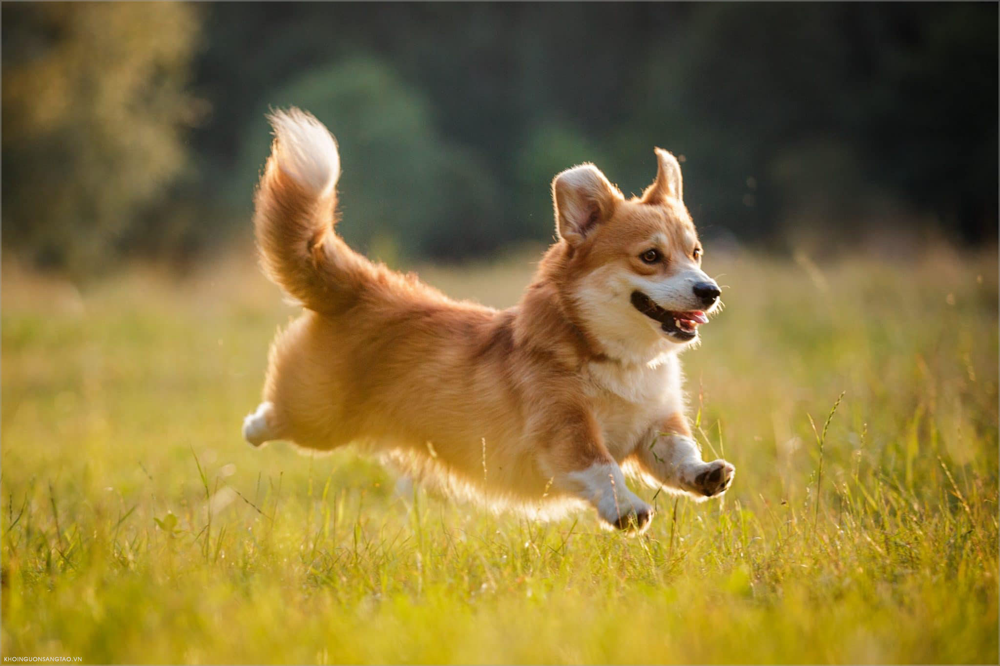

Chào Mừng Tới Gou Gou Shop!


Chó Shetland Sheepdog có nguồn gốc từ đảo Shetland, thuộc Scotland – Anh. Chúng là kết quả lai tạo từ hai giống chó Iceland Yakkin và Border Collie – giống chó chăn cừu nổi tiếng luôn đứng trong danh sách những loài chó thông minh nhất thế giới.
Buy
Chó chăn cừu Iceland là giống chó mỏ nhọn có nguồn gốc từ Iceland người Viking mang đến. Nó là giống tương tự như Buhund Na Uy và là loài tổ tiên của chó chăn cừu Shetland và Corgi xứ Wales hiện đại.
Buy
Chó Shiba là giống có kích thước nhỏ như một con mèo, thân hình thon gọn và có những biểu cảm cực kì ngộ nghĩnh và đáng yêu. Đây là giống chó rất được yêu thích và được lựa chọn là vật nuôi phổ biến ở nhiều gia đình
Buy
Chihuahua (Chiwawa) là giống chó nhỏ đến từ bang Chihuahua của đất nước Mexico và được xem là một trong những chú chó lâu đời nhất ở châu Mỹ nhưng lại được biết đến nhờ người Trung Quốc khi họ đem đến Châu Âu vào cuối thế kỷ 19.
Buy
Mang tên là chó Nhật nhưng những chú chó này có nguồn gốc từ cả xứ sở hoa anh đào Nhật Bản và Trung Quốc. Chó Nhật xuất hiện vào khoảng những năm 732 TCN, là món quà mà Triều Tiên tặng cho nước Nhật để kết nối tình hữu nghị giữa hai nước
Buy
Từ cái tên chó Bắc Kinh chắc hẳn mọi người đều biết giống chó này có nguồn gốc từ Trung Quốc. Đây là giống chó được biết là cổ nhất Trung Quốc và cũng là giống chó quý tộc xuất hiện nhiều trong giới hoàng gia.
Buy